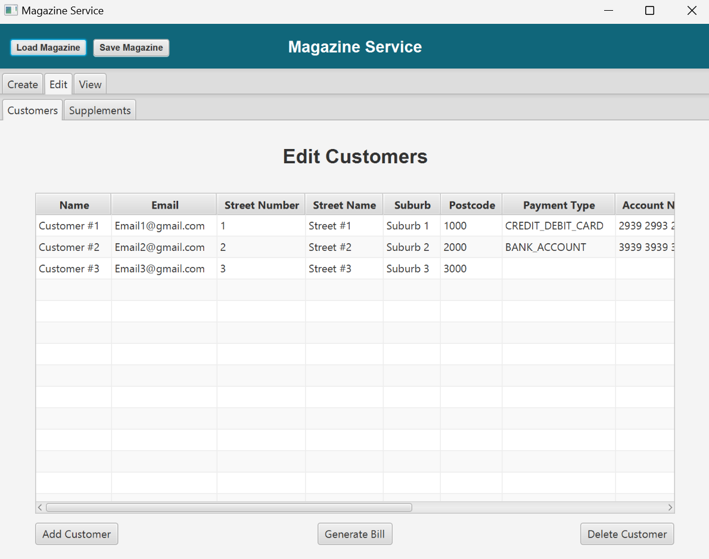
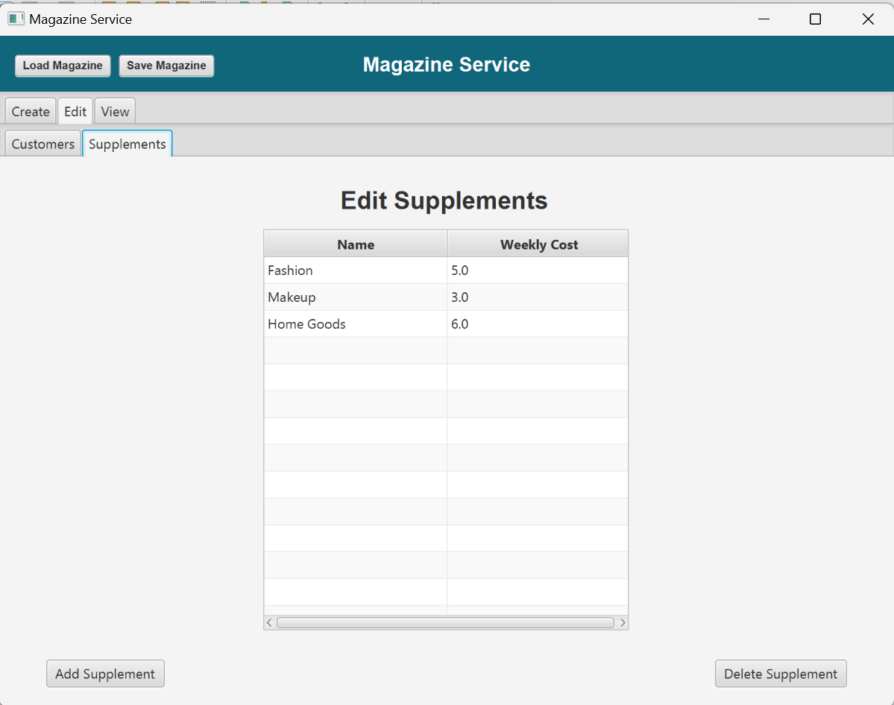
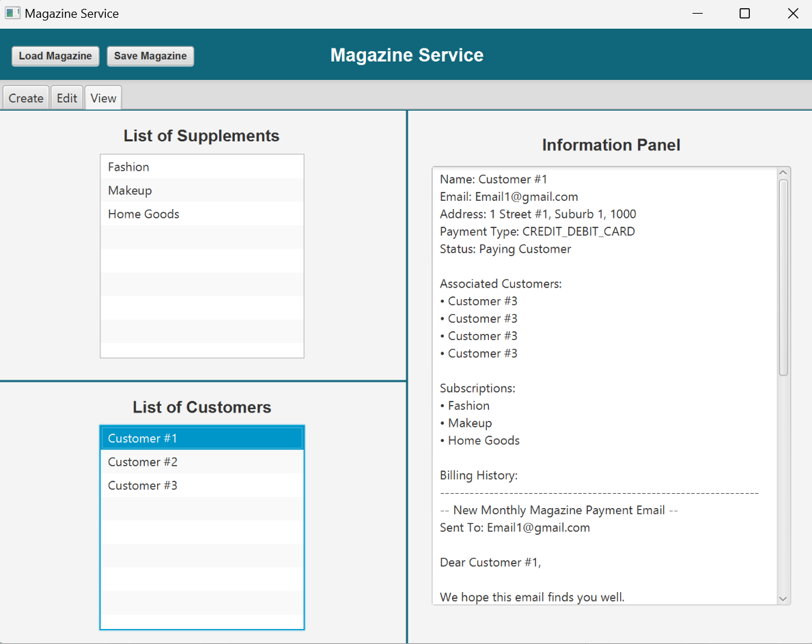
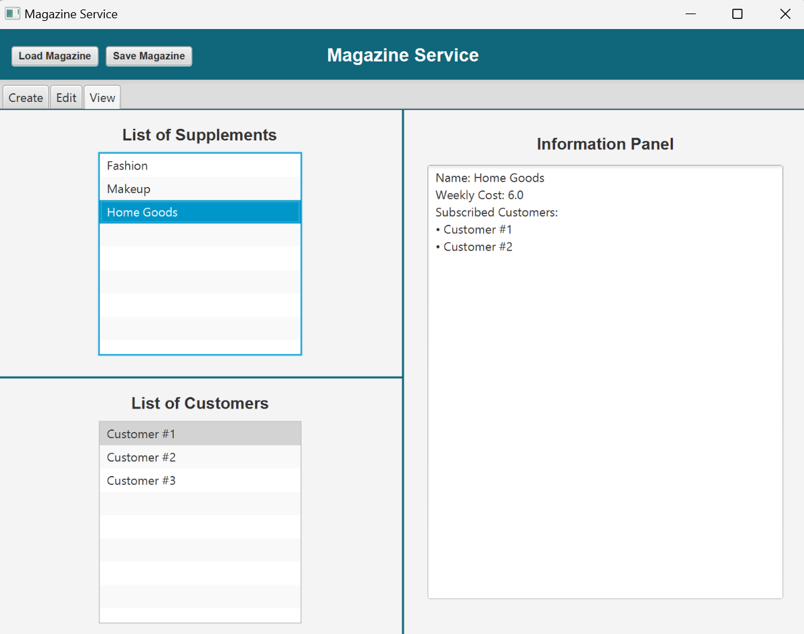

Magazine Service - JavaFX
PROJECT TYPE
University Project - Java, JavaFX
Description
This application was created using java SE 8 and the JavaFX library for GUI rendering and handling. The purpose was to create a CRUD application designed using OOP. The application supported the serialization of magazines and their customers so they could be loaded and saved from a file. The application also supports limited multithreading when processing the view information.
LAST UPDATED
2024
Development Team
- Zack Cornfield
Project Planning and Tools
- Trello
- Git with GitHub for source control
- GitHub Desktop
- Doxygen
Trailer
Features Developed by Me
Create

The creation pane guides the user through creating a new magazine, the supplements it offers, and the customers who will use the new magazine, if there are any, to begin with. Invalid information is not accepted, and a message will be shown to the user to explain how to fix the issue.
Edit
 The edit pane allows the user to edit existing supplements or customers using a table view. Exceptions will be caught and explained to the user if the new information is invalid.
View
 The view pane allows the user to view the supplement and customer information (including their billing emails), without being able to edit it.